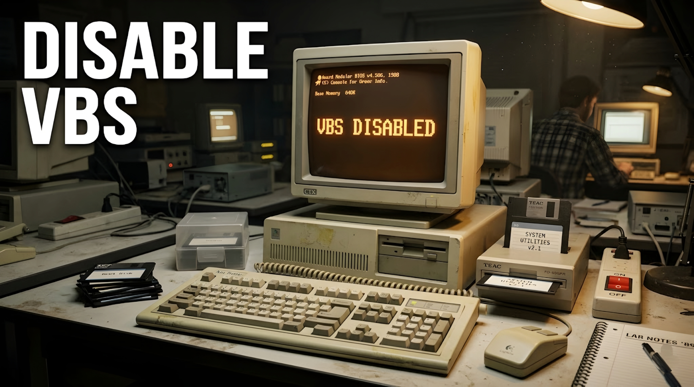

Disable Virtualization Based Security (VBS)
on Windows 11
2026-06-10 — 4 MIN READ

Virtualization-Based Security (VBS) and Core Isolation (Memory Integrity) can cause performance issues or conflicts with Android emulators. Here is how to completely disable them on Windows 11.
Step 1 — Disable Core Isolation (Memory Integrity)
The easiest way is through Windows Settings:
- Open the Start menu and search for "Core isolation".
- Click to open the Core isolation settings page.
- Toggle the Memory integrity switch to Off.
- Restart your computer.
Step 2 — Disable Optional Features
Some Windows features rely on the hypervisor and keep VBS active:
- Open the Start menu and search for "Turn Windows features on or off".
- Open it and uncheck the following (if they are listed):
- Virtual Machine Platform
- Windows Hypervisor Platform
- Microsoft Defender Application Guard
- Click OK and restart your PC.
Step 3 — Force Disable via Script (Recommended)
If VBS is still running, you can use our automated script to edit the Registry and disable hypervisor launch:
- Download Disable Hyper-V & VBS Tool
- Right-click the downloaded
.exefile. - Select "Run as Administrator".
- Follow any on-screen prompts.
- Restart your PC for the final time.
Important Note
Disabling virtualization features may prevent programs like VMware, Docker, or WSL2 from working.